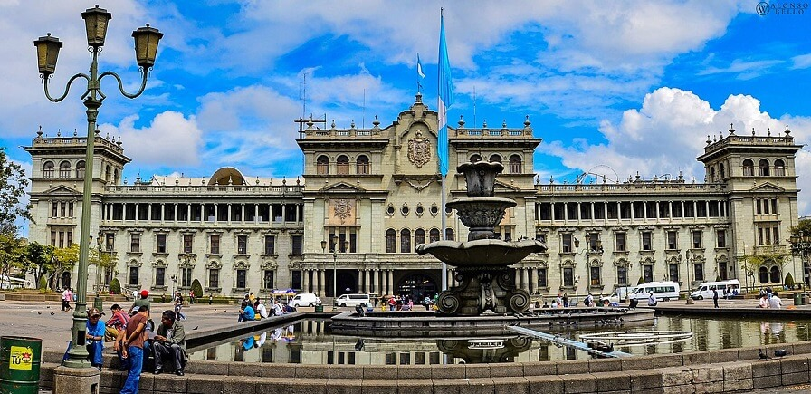
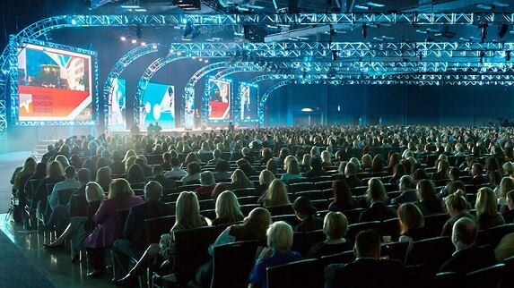

About Guatemala City
History
Within the confines of modern Guatemala City is the ancient Mayan city of Kaminaljuyu. Kaminaljuyú dates back some two thousand years and is known to have traded with distant Teotihuacan in central Mexico. The center of Kaminaljuyú was located a short distance from the oldest part of Guatemala City, and in the 20th century the city grew around the ruins (and in some cases on some of the peripheral ruins before they were protected). The Kaminal Juyu ceremonial center is now a park within Guatemala City.
This city is located in the south-central area of Guatemala at an altitude of 1,500 meters above sea level, and has a large number of green areas. According to the last census carried out in that city, 2,450,212 people live in it, 6 but considering its metropolitan area according to the National Institute of Statistics, it reaches an estimated 5,103,685 inhabitants for the year 2018. Which makes it the most populated and extensive urban agglomeration in Central America.1 In addition, Guatemala City, which is currently the capital of the Gran Ciudad del Sur mancomunidad, ranks first among the 20 most important cities in Guatemala. and it is the main city within its metropolitan area.
Relevant Information
Chamber of Commerce Events
The Chamber of Commerce of Guatemala City holds several events a year, all focused on being able to generate business opportunities that allow the city to continue growing and that our affiliates can progress and build close business relationships. All of our affiliates participate in these events at no cost and can be part of the design and development committee. The types of activities carried out throughout the year are listed below:
- 12 Main Thematic Conferences
- 12 Committee Meetings with the Municipality of the City
- 2 International Business Conventions
- 1 National Trade and Industry Fairs
Around these events there are and are registered successful cases of commercial relationships that were born in these activities, for more information request the information directly in the chamber.